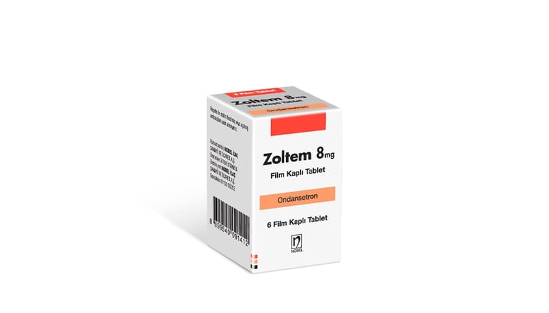

Zoltem 8 mg Film Kaplı Tablet, 6 Adet

Ne için kullanılır
KT · Bölüm 1ZOLTEM ondansetron etkin maddesini içerir. Sarı renkli, film kaplı, bir yüzü Nobel logolu, 6 adet tablet içeren ambalajlar halindedir. ZOLTEM inek sütü kaynaklı laktoz içerir.
ZOLTEM anti-emetik olarak adlandırılan bir ilaç grubuna dahildir. Bazı ilaç tedavileri (örn; kanser ilaçları) kendinizi hasta hissetmenize ve kusmanıza neden olabilir. ZOLTEM kendinizi hasta hissetmenizi veya kusmanızı önler. ZOLTEM, ilaç ve ışınla yapılan kanser tedavilerine bağlı bulantı ve kusmayı önlemek için kullanılır. Ayrıca, ameliyatlardan sonra ortaya çıkan bulantı ve kusmaları önlemek için de kullanılır.
Doktorunuz size ve sizin koşullarınıza uygun olarak bu ilacı seçmiştir.
ZOLTEM, tedavi sonrası kendinizi hasta hissetmemeniz ve kusmanızı önlemek için verilmiştir.